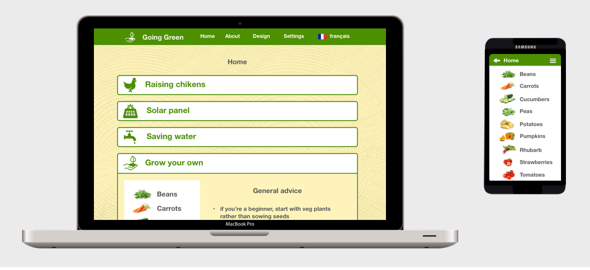

CICA Online

We designed a new digital service to replace and improve the actual paper base one for the Criminal Injury Compensation Authority.
I started as a software developer at the discovery stage, but I mostly worked on User Research and Design until late in the private Beta stage (July 2016 - April 2018) in collaboration with the User Researchers and a Content Designer.
I was in charge of coding the high fidelity prototypes, using the toolkit provided by the Government Digital Service, following closely their guidelines to comply with the Digital by Default policy of the GOV.UK.
This was an ongoing project when I left in September 2018.
Going Green

Personal project - This website is for people who want to start some green changes, but are unsure where to begin. They can explore various possibilities, get a better idea of what to expect, and decide if these changes are worth doing without having to check various sources of information.
The initial work started in 2016 as an IT degree project. There was no coding involved as the focus was the design. After learning more about permaculture, frontend development and UX design, I decided to explore this further in 2018.
This is on hold at the moment. I'm a team of one ;-) and would need to do further user research before improving the design at this stage.
Video Games - Knowledge base Wiki

While working as a Technical Customer Support representative for video games, I re-designed the knowledge base wiki we were using to answer customers either via phone or emails.
The existing wiki was under-used, not updated and a lot of sources of information were missing or disseminated among colleagues.
I reviewed the existing information, added to it and prepared a specific wiki section prior to the launch of a new game. As everyone agreed it had been a great tool to answer our customers efficiently on the week of the launch, I developed it further for other game launches.